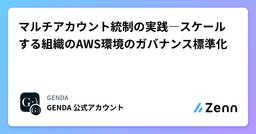

GENDAのフィード
https://zenn.dev/p/genda_jp
『世界中の人々の人生をより楽しく』をAspiration（大志）に掲げたエンターテイメント企業『GENDA』（ジェンダ）
フィード

マルチアカウント統制の実践―スケールする組織のAWS環境のガバナンス標準化 1
1
GENDAのフィード
こんにちは、Platform Engineering部 SRE/インフラ マネージャーの布田です。本記事では、M&Aを成長戦略の柱の一つとしているGENDAにおいて、AWS管理者である私たちのチームがM&A時に何をしているのかをお伝えします。元々は他社が管理していたAWS環境をグループに移管する際に、私たちが実際にやっていることを六つのフェーズに分けて紹介します。マルチアカウント統制に向き合っている方の参考になれば幸いです。なお、M&Aで受け入れるシステム環境は都度異なり、AWS以外のクラウドやオンプレミス環境が対象となる場合もあります。今回は、そのなかでも多...
1日前

dbtのCI/CDとLakeflow Jobsによる定期実行のDABs管理
GENDAのフィード
こんにちは、データマネジメント部でデータエンジニアをしています。山城です。今回はデータチームで管理しているdbtのCI/CDや、定期実行用Lakeflow Jobsについて実際に行っている下記の取り組みについてまとめます。GENDAの場合だと、複数の事業・グループ企業があるため、それぞれの管理や環境を分ける部分に注力して作成しました。dbtのCI/CDdbtの定期実行用Lakeflow JobsのDeclarative Automation Bundles (DABs) によるIaC化Lakeflow JobsのCD 前提簡単に取り組み前の状態についてまとめます。Gi...
9日前
AI DevEx Conference 2026 発表・参加レポート
GENDAのフィード
先日、2026年7月22〜23日に開催されたAI DevEx Conference 2026にて、Engineering Officeの梅谷がポスターセッションで発表しました。https://dev-productivity-con.findy-code.io/aidevex2026本記事では、AI DevEx Gallery（ポスターセッション）における梅谷の発表レポート、現地およびオンラインで参加したメンバーの参加レポートをお送りします。 発表レポート 「FinOps for AIの考え方で整える生成AIツール運用と活用拡大―可視化・対話・最適化・運用による再現性ある仕...
9日前
オーケストレーターではなく調査役に Fable を活用した話
GENDAのフィード
はじめに株式会社GENDA 開発部エンジニアの奥山です。先日、Claude Code と Codex を herdr の別ペインで組ませるオーケストレーションを baton という plugin に切り出した話を書きました。https://zenn.dev/genda_jp/articles/46745564b7a9ddその baton を実運用しながら手を入れる中で、モデルの配置を大きく変えました。これまでオーケストレーター役に割り当てていた Fable 5 を外し、investigator という調査と推論を担う新しい座席に置き直すという変更です。run 全体を統括す...
10日前
GENDAで進めるデータマネジメントの土台づくり―メタデータ・品質・権限管理の取り組み
GENDAのフィード
こんにちは、データマネジメント部の平川です。GENDAでは、扱うデータの種類も、それを利用する関係者の数も日々増加しています。そのような状況では、「データの意味を正しく理解できるか」、「異常に気づけるか」という観点が重要になります。同時に、データを安全に使える環境を整えることも求められます。本記事では、その課題と、実際に取り組んでいるデータマネジメントの内容を紹介します。 データを「使える状態」にするための課題集めたデータが実際に使えるかどうかは、まずテーブルの意味が分かるか、そして品質面でも信頼できるかに大きく左右されます。意味が分からないテーブルは、利用者だけでは使ってよい...
11日前
SQL MCP serverを試してみて使えそうなユースケースを考える
GENDAのフィード
株式会社GENDAのエンジニアのジャンボです。SQL Serverと日々向き合っているのですが、便利そうなMCPがあったんで試してみました。https://azure.microsoft.com/en-us/updates?id=564734 SQL MCP Server とは？Microsoft の Data API builder（DAB）2.0 に組み込まれた MCP サーバー機能です。DAB はもともと SQL Server / Azure SQL などのデータベースから REST / GraphQL API を自動生成するツールですが、2.0 から MCP エンドポイン...
19日前
Datadogアラート起点でコードベースを一次調査するAIエージェントを、CloudflareとGitHub Actionsで安く運用する
GENDAのフィード
はじめにプロダクトを運用していると、Datadog のエラーアラートが Slack に流れてきて、誰かが「これ何のエラー？」とスレッドで一次調査を始める、という光景が日常的にあります。ログを見て、トレースを辿って、該当コードを開いて、原因の当たりをつける。この最初の 30 分は定型的な作業が多いです。この記事は、この 30 分の定型作業を Cloudflare Workers + GitHub Actions + Claude Code で自動化する AI エージェントを構築した話です。アーキテクチャとスタック選定の理由、約 1 ヶ月運用した実測の費用感をまとめます。 何を作...
20日前
SRE NEXT 2026 スポンサー協賛・登壇・参加レポート
GENDAのフィード
先日、2026年7月10〜11日に開催されたSRE NEXT 2026に、GENDAはゴールドスポンサーとして協賛しました。https://sre-next.dev/2026/昨年はランチスポンサーとして協賛しましたが、今年はゴールドスポンサーとして、ブース展示と登壇の両面から、私たちの取り組みや技術的な姿勢を発信しました。本記事では、登壇内容やブースの様子に加え、印象に残ったセッションや今回の参加を通して得られた学びをご紹介します。 登壇レポートGENDAからはSRE/インフラの三名が全員登壇することができました。マネージャーの布田がスポンサーセッション、木村がLT、大澤...
21日前
AWS Summit Japan 2026 参加レポート
GENDAのフィード
先日、2026年6月25〜26日に開催されたAWS Summit Japan 2026に、SRE/インフラエンジニアが参加しました。https://aws.amazon.com/jp/events/summits/japan/今年はKiroなどのAIエージェントが当たり前のように話題として取り上げられ、「AIを試す」から「AIを運用へ組み込む」へ話題が変化していることを感じました。一方で、AIだけではなく、セキュリティに対する備えやコスト管理といった泥臭くも本質的なプラクティスの話題も印象に残りました。AIで効率化を進めつつ、こうした基本の積み重ねも学ぶことができ、充実した二日間...
23日前
【情シスのSkill】ClaudeでSaaSセキュリティ評価チェックSkillを作ってみた
GENDAのフィード
【情シスのSkill】ClaudeでSaaSセキュリティ評価チェックSkillを作ってみた はじめに皆さんこんにちは！株式会社GENDA IT戦略部所属CorpEngのアサノです！この記事は、前回の【情シスのSkill】ClaudeでSaaSカオスマップを"ポン出し"するSkillを作ってみたに引き続き【情シスのSkill】シリーズ第2弾です。今回は「このSaaS、社内で使っていいですか？」という社内の問い合わせで毎回調べていたセキュリティ評価業務を、ClaudeのSkillとして作ってみた話です。作ったSkillは記事の後半にてGitHubで公開しているので、同じ悩...
23日前
Claude Codeのstatuslineに今やっていることを表示する
GENDAのフィード
同時にClaude Codeセッションをいろいろ開いていて、それぞれで何をやっていたのかわからなくなることがよくあります。/renameでセッションに名前をつけるのも、忘れることが多くて。そこで、statuslineに作業内容を表示させればいいんじゃないかと考え、/statusline コマンドにこう投げてみました。一行追加して、そのセッションで何をやってるかの一行サマリーを表示する、ってできますか？作業中のClaudeのサブエージェントへのプロンプトを覗いてみたら、作業内容をLLMに投げてサマらせるしくみを作っているようです。なるほどね。ところが、最初にできたものいまいちで。最...
24日前
herdr を活用した Codex とのオーケストレーション用 Claude Code Plugin を作ってみた
GENDAのフィード
はじめに株式会社GENDA 開発部エンジニアの奥山です。先日、「Claude Code サブエージェントのネスト機能で .claude/agents/ の定義が効いた話」を書きました。あちらはサブエージェントを「深さ方向」に積む話でしたが、今回は「並走」の話を含んでいます。https://zenn.dev/genda_jp/articles/16d35ffa464d65Claude Code をメインに業務している私ですが、直近その作業セッションの隣に Codex を常駐させて相談役にするオーケストレーションを herdr という terminal multiplexer ...
25日前
【情シスのSkill】ClaudeでSaaSカオスマップを"ポン出し"するSkillを作ってみた
GENDAのフィード
【情シスのSkill】ClaudeでSaaSカオスマップを"ポン出し"するSkillを作ってみた はじめに皆さんこんにちは！株式会社GENDA IT戦略部所属CorpEngのアサノです！今回は、Anthropicの新モデル Claude Fable を情シス目線で検証する中で作った、「サービス名を列挙しただけの一覧から、SaaSカオスマップのHTMLをポン出しするSkill」 をご紹介します。記事の最後に、作成したSkillそのものも公開します。想定読者・情シス、CorpEngの方・SaaSカオスマップを作りたい／作り直したい方・Claudeの「Skill」機能...
1ヶ月前
"Cube" をプロダクト側のセマンティックレイヤー” にした話"
GENDAのフィード
TL;DR会計・オペレーションの集計データを、分析基盤（DWH/BI）ではなく プロダクト（基幹アプリ）側のセマンティックレイヤーとして Cube で実装した。会計・オペレーションは正しい数字を今すぐ欲しいという前提があり、分析基盤で ETL を挟むと、レポートの値が実データと合っているかの整合性検証が難しくなる。かといってリアルタイムな分析基盤を別途構築・運用するのも手間とコストがかかる。そこで変換前の基幹データ（operational DB）を直接集計する構成にした。レポートを作るには、必要なカラムを選び、条件で絞り込み、軸でまとめて Pivot するといった、実質 SQ...
1ヶ月前
単価は下がるのに、なぜ請求は増えるのか。AI環境管理者のためのTokenomics
GENDAのフィード
「モデルの単価は下がってきたのに、AIの請求額は毎月増えている」。個人でAIを使っているだけでも、サブスクや従量の支払いがじわじわ膨らむ感覚はあるはずです。社内のAI利用を預かる立場なら、なおさらでしょう。海外では、この感覚に名前がつき始めています。「Tokenomics」（トークン経済）です。2026年6月3日には、Linux FoundationがAIコスト管理のオープン標準づくりを目的とした「Tokenomics Foundation」の設立意向を発表しました。Google・Microsoft・Oracle・JPMorganChaseなど、提供側と利用側の大手が名を連ねています。...
1ヶ月前
既存の複数リポ構成を壊さずに AI agent の横断開発を実現する
GENDAのフィード
作成日時: 2026-06-25 はじめにフロントエンドとバックエンドを別々の Git リポジトリで管理しているチームは多いです。リポジトリを分けることで独立したデプロイ・CI/CD・レビューが実現できる一方、AI エージェントを使った開発では大きな壁にぶつかることがあります。本記事では、社内プロダクト（バックエンド myapp-be / フロントエンド myapp-fe）の開発で既存の CI/CD・PR・ブランチ運用を一切変えずに、AI エージェントが両リポを横断して開発できる環境をgit submodule superproject を使って構築した記録を紹介します。...
1ヶ月前
Data + AI Summit 2026 を現地で受けて見えた「コンテキストレイヤー」
GENDAのフィード
はじめにサンフランシスコで開催された Data + AI Summit 2026 を、会場で見てきました。これまで初日Keynoteの Genie Ontology と、2日目Keynoteの Genie App Builder について書いてきましたが、今回は個別の新機能ではなく、何日か会場で過ごして自分の中に残ったものを書きます。先に断っておくと、これはサミット全体を総括するような大それた話ではありません。私が選んで受けたいくつかのセッションで、やり方は違えど繰り返し出てきたテーマが「AIに業務コンテキストをどう渡すか」で、それを自分なりに「コンテキストレイヤー」という捉え...
2ヶ月前
AWS WAFが呼び戻した402 Payment Requiredとエージェント経済の決済レイヤー
GENDAのフィード
AWS WAFにAI traffic monetizationという機能が追加されました。サイトやAPIにアクセスしてくるAIボットに対して、コンテンツの利用料を課金できる機能です。AIクローラへの対応はこれまで「許可するか、ブロックするか」の二択でしたが、そこに「対価を受け取って通す」という第三の道が加わりました。機能そのものの仕組み、つまりコンテンツを持つ側がどう収益化を設定するかは、本記事では深追いしません。それらの内容はこちらが参考になります。https://blog.serverworks.co.jp/aws-waf-ai-traffic-monetization本記事で...
2ヶ月前
AWS Blocksとは何者か。Amplify・App Studioとの違いと、それぞれが目指すもの
GENDAのフィード
2026年6月16日、AWSは AWS Blocks をパブリックプレビューとして発表しました。TypeScriptでバックエンドを書くと、そのコードがそのままAWS上のインフラになる、オープンソースのフレームワークです。https://github.com/aws-devtools-labs/aws-blocksここで多くのAWSユーザーの頭をよぎるのは、「またフルスタック開発の道具が増えた」という感覚ではないでしょうか。フロントエンド開発者がTypeScriptでフルスタックアプリを作る道具なら、すでにAmplify Gen2があります。コードを書かない層に向けてはApp Stu...
2ヶ月前
S3 annotationsで変わる、メタデータを「どこに置くか」の判断
GENDAのフィード
2026年6月17日のAWS Summit New Yorkでは、エージェントを本番で動かすためのインフラを揃える発表がいくつも並びました。発表の全体像は公式ブログにまとまっています。https://aws.amazon.com/blogs/aws/top-announcements-of-the-aws-summit-in-new-york-2026/その中に、見出しだけ読むと地味なものがあります。S3 annotationsです。オブジェクトに最大1GBの情報を直接ぶら下げられる機能なので、最初は「タグの容量が増えただけ」に見えるかもしれません。ただ、容量の話だと受け取ると本質...
2ヶ月前